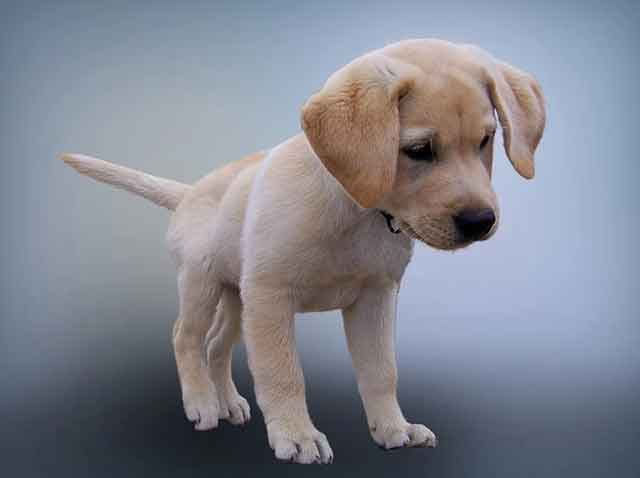
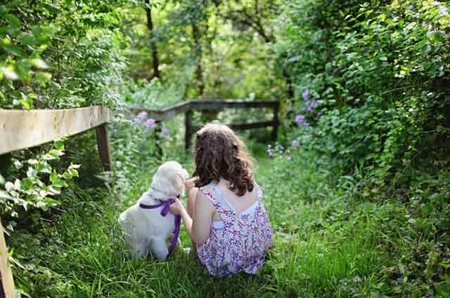
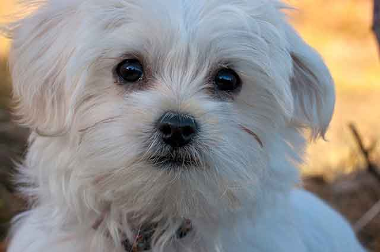
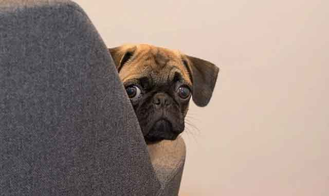
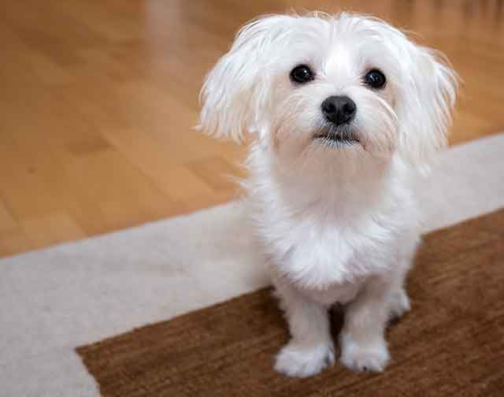
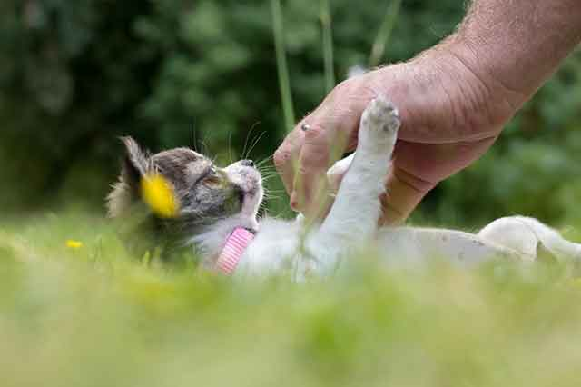
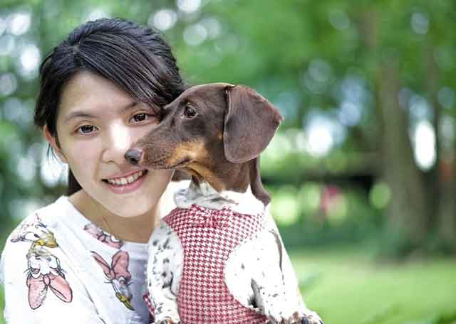

훈육이 필요할 때! 강아지 올바르게 혼내는 방법
애지중지 사랑으로 키운 강아지. 하지만 이런 강아지도 가끔은 집에서 실수할 때가 있습니다. 훈련이 잘된 강아지라도 스트레스를 받거나 갑작스러운 신체 변화로 인해 실수하게 될 수도 있고요. 게다가 아직 훈련이 제대로 되지 않은 상태라면 더욱더 실수할 가능성이 크겠죠? 하지만 실수를 했다고 막연히 혼을 낼 수도 없는 일입니다. 의사소통할 수 없으니까요! 그럴 때 어떻게 훈련하고 또 훈육하면 좋을지, 강아지 올바르게 혼내는 방법에 대해서 알려드릴게요!
"이런 훈육을 지양해야 해요."
훈육하는 방법은 여러 가지가 있죠. 하지만 훈육할 때도 반드시 피해야 할 훈육 방법이 있는 데요. 사람으로선 크게 문제 될 것이 없어 보이는 방법이라도 강아지로서는 그렇지 않을 수 있어요. 훈육 방식이 잘못 돼서 오히려 나쁜 행동을 키우는 계기가 될 수 있고, 정신적인 트라우마에서 벗어나 오지 못하는 상황이 발생할 수 있답니다.
1. 신체적 훈육
사람의 손으로 살짝 때렸을 때 크게 아프지 않을 거로 생각할 수 있지만, 실제로 강아지가 느끼는 통증은 클 수 있습니다. 신체적 훈육은 동물에겐 학대로 겁만 줄 뿐 잘못된 행동을 개선하지 못합니다.
2. 바르지 못한 언어적 훈육
큰 소리를 내거나 욕을 한다고 해서 강아지 행동이 고쳐지지 않습니다. 강아지는 사람의 모든 말을 이해할 수 없고 소리를 크게 외친다고 어떤 것을 의미하는지 이해하기 어렵습니다.
3. 밀실 공간에 가두는 훈육
좁은 공간에 가둬두는 것 또한 도움이 되지 않습니다. 오히려 강아지의 불안감을 높이고 정서적으로 불안정한 영향을 미칠 수 있습니다.
"이런 훈육을 지향해요"
긍정적인 면을 강화해 훈련하는 방법으로 '잘한 행동'을 칭찬하는 것입니다. 나쁜 행동을 아무리 혼내고 타일러도 개선되지 않았지만, 잘한 행동을 칭찬하면서 행동이 개선되고 좋아졌다는 결과가 있는 데요.
예를 들면, "앉아"라고 했을 때 10번 중 1번 앉을까 말까 합니다. 이때 한번을 앉게 되면 그때 간식이나 칭찬으로 '긍정'의 이미지를 심어주는 것입니다.
물론 혼내야 하는 순간도 찾아옵니다. 그럴 때는 아주 단호한 목소리로 "안돼!" 또는 잘못된 행동임을 인지할 수 있을 정도의 명령어로 짧게 다그치는 것이 좋습니다. 훈육하는 시간이 길어지면 강아지의 집중력이 떨어지고 오히려 제대로 된 훈련이 되지 않을 수 있습니다.
"어릴 때부터 '긍정적으로'"
칭찬은 고래도 춤추게 한다고 하죠? 강아지도 마찬가지입니다. 칭찬으로 타이르고 올바른 행동을 할 수 있도록 긍정적인 영향을 준다면 지금까지 했던 나쁜 행동을 개선해 나갈 수 있습니다. 오히려 화를 내고 다그치는 일은 역효과를 낳을 수 있으니, 훈육이 필요할 때는 '긍정'의 방법으로 발상의 전환을 해보시는 것은 어떨까요?
[출처] 훈육이 필요할 때! 강아지 올바르게 혼내는 방법 ｜ 작성자 펫패밀리